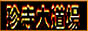

珍寺的リンク集
徐々に増やしていく予定。取り敢えず良く見るものを。
なお、「珍寺大道場」上で取り上げた寺に関するHPはそれぞれの本文からリンクしています。
珍寺大道場の姉妹ページ、日本の「すきま」を垣間見せてくれます。お薦め。
ワンダーJAPAN
日本の＜異空間＞探検マガジン。連載させていただいてます。買ってくれると嬉しいです・・・（現在休刊）
ワンダーＪＡＰＯＮとして復刊しました！ ワンダーJAPON編集長のブログ
ROADSIDERS' weekly
我が心の師匠、都築響一御大のウェブマガジン（の紹介ページ）。正座して拝すべし。
八画文化会館
旧INDIVISION、旧ローカル銀座、旧東海秘密倶楽部、旧愛知県漂流…
独自の視点で日本の不思議なスポットを紹介する名物サイトがリニューアル。おススメ。
同名の雑誌も出てるので御買い求めるが吉。
ポンチハンター2.0
幅広い守備範囲と長いキャリアを誇るポンチハンターＫＵＺＥさんのHP。リスペクト！
泰国の変なスポット
長らくタイに在住されていたマレーンポーさんのブログ。
タイの珍寺、大仏、地獄に特化した天上天下唯我独尊なサイトです。
クルーラホーンの旅行情報サイト
世界中を巡ってらっしゃるクルーラホーンさん。
でも国内編も凄いんです。
 百科図鑑
百科図鑑
大仏情報の充実が嬉しいサイト。
軽自動車で日本を２周するという荒行を敢行されたクロスケさんの行動力ったら…
一海の時代劇なりきり教室
彼岸まで行ってしまったマニア道。稀に見る「熱い」ページでっす。
あやしい城
日本中のあやしい城を紹介。現代日本の深遠なるB面が見えて来ます。
バカルト・ドット・コム
名古屋B級スポット界の巨匠にして浅野祥雲研究の第一人者大竹敏之さんのサイト。
 Floodgates[水門]
Floodgates[水門]
水門写真家、佐藤淳一さんのサイト。ソリッドな画像に込められたその熱意ったら！
九州大図鑑
九州の珍スポットを網羅するおにぎり太郎さんのブログ。
軟体レポート
ソフトリィXさんのブログ。特に中国の記事がオススメ。ほんと足で稼いでます。
彼のブログ見てると、情報ソースがネットだけのブログとかホント意味ないなーと思います(自戒も含めて）。
渡仁（渡邊丈士）の全国仁王行脚！
日本全国の仁王様を訪ねるという孤高な偉業をほぼ達成しつつある渡仁さん。
そのストイックなまでの旅は最早、荒行の域に達してます。
気になったら とりあえず行ってみるブログ
大仏写真家、半田カメラさんのブログ。大仏ってここまでかっこいいのか！と驚くこと請け合い。
このブログをみて、初めてちゃんと写真撮らなきゃ、と思いました。
バナ−です。サイズは適当に加工して使って下さい。


※リンク切れ、未更新、内容が明らかに変わってしまったサイトさん等々はこちらの判断により勝手に切ったり貼ったりさせてもらってます。あしからず。
あと面識のない方の相互リンクのお申し出はお断りさせていただいております。
珍寺大道場HOME